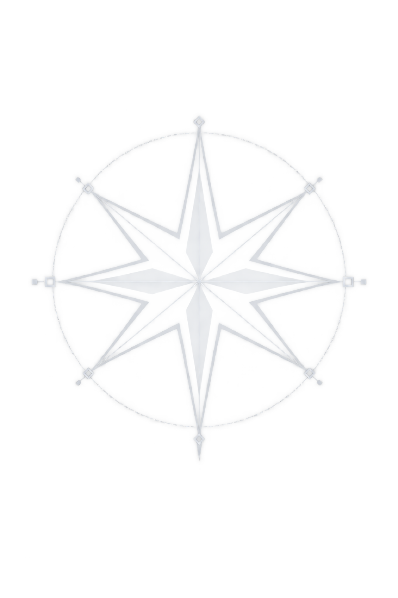
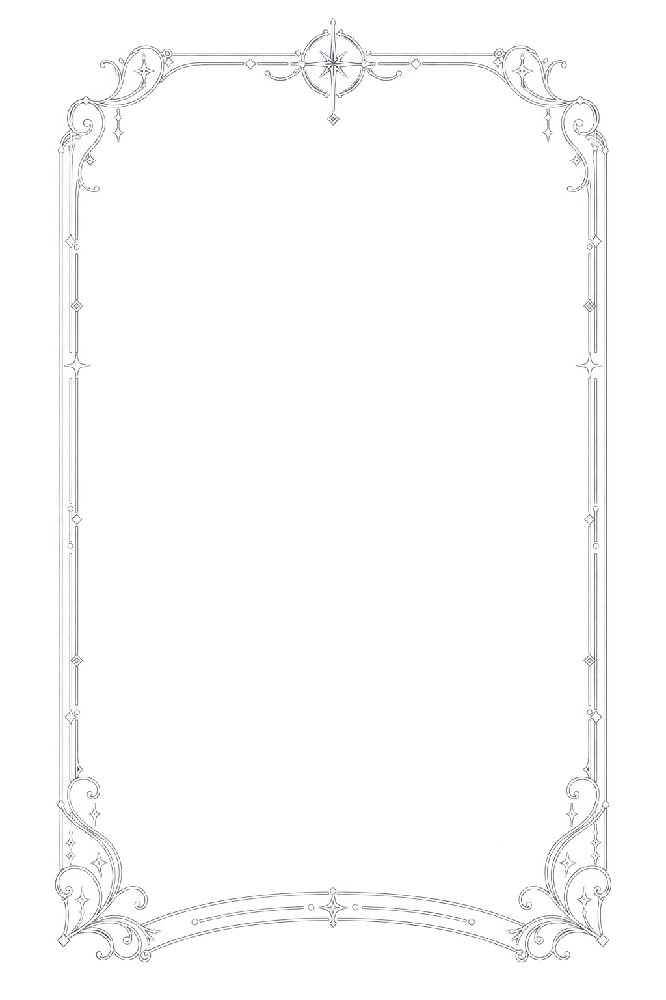
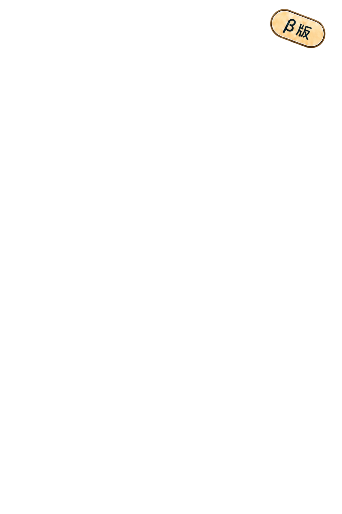

運命予報 — 分離素材の確認
本編とは独立した素材確認用ページです。文字は画像に焼き込まず、下地と星の透明度をそれぞれ調整できます。


運命予報
Fortune 蛇失せモノに注意。
笑う声が聞こえたら、
振り返らないこと。

画像生成で分離したため、輪郭は元見本と完全なピクセル一致ではありません。星の位置・縮尺はこのページで仮調整しています。下地は同じSVG輪郭を直接表示するため、file:でも外部マスクを使わず確認できます。
素材一覧・生成条件・使い方